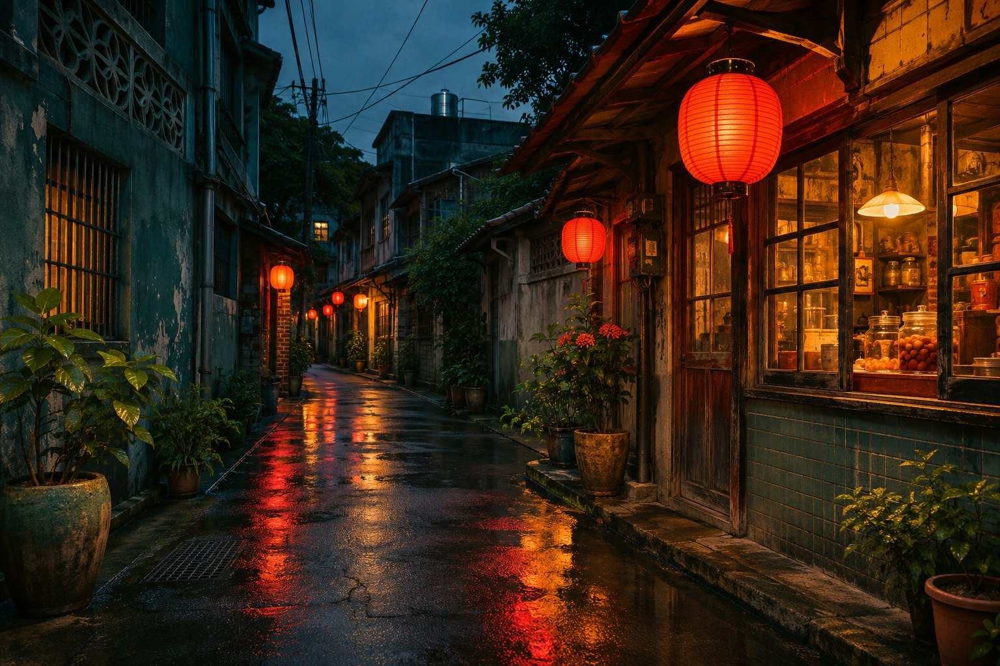

Saturation / 色彩
飽和度
從灰階到濃烈色彩，觀察紅燈籠與藍灰牆面如何改變。

動手比較
原圖基準 100%
原理
飽和度描述色彩看起來有多濃。這個控制項降至 0% 時，影像變成灰階。提高時，燈籠紅色和牆面的冷色都可能變得更強，原本有層次的區域也可能變得過於刺眼。
三步練習
- 把飽和度拉到 0%，再慢慢拉過 100%。
- 觀察紅色倒影與藍灰牆面哪一處更容易吸引視線。
- 切回原圖，選一個能凸顯主體又保留環境氣氛的數值。
帶走一個觀察
先決定希望讀者看哪裡，再調整色彩強度。背景的飽和度也會影響視線。